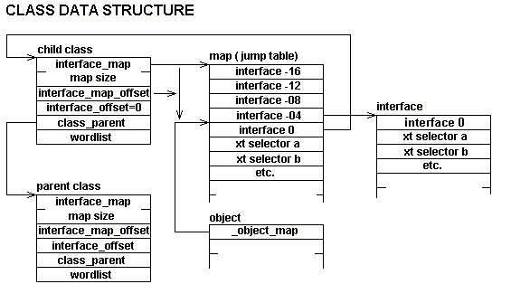
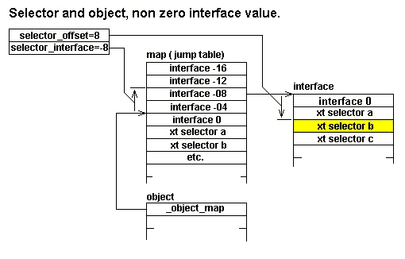

Sept 25 1998 Charles Esson Coding changed to suit COLDFORTH standards
Sept 26 1998 Charles Esson Tables stored in Dictionary
Oct 11 1998 Charles Esson Cross compiler support
March 18 2000 Charles Esson Added look
July 2001 Charles Esson Changed object to base_class when writing manual; the reason should be obvious.
This file retains M.Anton Ertl copyright: This file is in the public domain. NO WARRANTY.
This section covers basic usege, not preferred useage, preferred useage has one defining methods with m:, and instance data with instance_variable.
You can define a class for graphical objects like this:
base_class class \ "base_class" is the parent class selector :draw ( x y graphical -- ) end_class graphical
This code defines a class graphical with an operation draw. We can perform the operation draw on any graphical object, e.g.:
100 100 t-rex draw
where t-rex is a word (say, a constant) that produces a graphical object.
How do we create a graphical object? With the present definitions, we cannot create a useful graphical object. The class graphical describes graphical objects in general, but not any concrete graphical object type (C++ users would call it an abstract class); e.g., there is no method for the selector draw in the class graphical.
For concrete graphical objects, we define child classes of the class graphical, e.g.:
graphical class \ "graphical" is the parent class cell% field circle_radius+ :NONAME ( x y circle -- ) circle_radius+ @ draw-circle ; overrides draw :NONAME ( n-radius circle -- ) circle_radius+ ! ; overrides :construct end_class circle
Here we define a class circle as a child of graphical, with a field circle-radius (which behaves just like a field in the structure package); it defines new methods for the selectors draw and :construct (:construct is defined in base_class, the parent class of graphical).
Now we can create a circle on the heap (i.e., allocated memory) with:
50 circle heap_new constant my-circle
heap_new invokes :construct, thus initializing the field circle-radius with 50. We can draw this new circle at (100,100) with
100 100 my-circle draw
Note: You can invoke a selector only if the object on the TOS (the receiving object) belongs to the class where the selector was defined or one of its descendents; e.g., you can invoke draw only for objects belonging to graphical or its descendents (e.g., circle). Immediately before end_class, the search order has to be the same as immediately after class.
When you define a class, you have to specify a parent class. So how do you start defining classes? There is one class available from the start: base_class. You can use it as ancestor for all classes. It is the only class that has no parent. It has three selectors: :construct :destruct and :print.
You can create and initialize an object of a class on the heap with heap_new ( ... class -- object ) and in the dictionary (allocation with ALLOT) with dictioanary_new ( ... class -- object ). Both words invoke :construct, which consumes the stack items indicated by "..." above.
If you want to allocate memory for an object yourself, you can get its alignment and size with class_instance_size+ 2@ ( class -- align size ). Once you have memory for an object, you can initialize it with init-object ( ... class object -- ); :construct does only a part of the necessary work.
In general, it is a good idea to ensure that all methods for the same selector have the same stack effect: when you invoke a selector, you often have no idea which method will be invoked, so, unless all methods have the same stack effect, you will not know the stack effect of the selector invocation.
One exception to this rule is methods for the selector :construct. We know which method is invoked, because we specify the class to be constructed at the same place.
Normal selector invocations determine the method at run-time depending on the class of the receiving object (late binding).
Sometimes we want to invoke a different method. E.g., assume that you want to use the simple method for printing objects instead of the possibly long-winded print method of the receiver class. You can achieve this by replacing the invocation of :print with
[bind] base_class :print
in compiled code or
bind base_class :print
in interpreted code.
When we define a method for a selector, we often want the method to do what the selector does in the parent class, and a little more. There is a special word for this purpose: [parent]; [parent] selector is equivalent to [bind] parent selector, where parent is the parent class of the current class. E.g., a method definition might look like:
:NONAME
dup [parent] foo \ do parent's foo on the receiving object
... \ do some more
; overrides foo
or
:m
this [parent] foo \ do parent foo
..... \ do some more.
; overrides foo
Early binging for speed is not worth it. Late binding is pretty fast with this model anyway, so the benefit of using class binding is small; the cost of using class binding where it is inappropriate is reduced maintainability.
While we are at programming style questions: You should bind selectors only to ancestor classes of the receiving object. E.g., say, you know that the receiving object is of class foo or its descendents; then you should bind only to foo and its ancestors.
In a method you usually access the receiving object. If you define the method as a plain colon definition (e.g., with :NONAME ), you have the receviing object as the top data stack item. To avoid this, you define the method with m: ... ;. E.g., you could define the method for drawing a circle with
\ remember cicle-radious is field child word. m: \ runtime ( x y circle -- ) ( x y ) this circle-radius @ draw-circle ;
When this method is executed, OP is pushed ontot he return stack and the receiver object address is removed from the stack and placed in the register OP; you can then get the objects addres with this. The system maintains OP across tasks switches and across CATCH. A m: word can be left with EXIT and end with ;
You will frequently use sequences of the form this field (in the example above: this circle-radius). If you use the field only in this way, you can define it with instance_variable and eliminate the this before the field name. E.g., the circle class above could also be defined with: instance_variable
graphical class cell% instance_variable %%radius m: ( x y circle -- ) %%radius @ draw-circle ; overrides draw m: ( n-radius circle -- ) %%radius ! ; overrides :construct end_class circle
%%radius can only be used in circle and its descendent classes and inside m:...;.
Inheritance is frequent, unlike structure extension. This exacerbates the problem with the field name convention: One always has to remember in which class the field was originally defined; changing a part of the class structure would require changes for renaming in otherwise unaffected code.
To solve this problem, a scoping mechanism was added. A field defined with instance_variable is visible only in the class where it is defined and in the descendent classes of this class. Using such fields only makes sense in m:-defined methods in these classes anyway.
This scoping mechanism allows us to use the unadorned field name, because name clashes with unrelated words become much less likely.
Once we have this mechanism, we can also use it for controlling the visibility of other words: All words defined after protected are visible only in the current class and its descendents. public restores the compilation (i.e. current) wordlist that was in effect before. If you have several protecteds without an intervening public or set-current, public will restore the compilation wordlist in effect before the first of these protecteds.
Create a heap table copying data from another region.
\ target version
: _save_mem ( addr1 u -- addr2 u )
SWAP >R \ u (--
DUP \ u u (--
ALLOCATE THROW \ u add2 (--
SWAP \ addr2 u (--
2DUP \ addr2 u addr2 u(--
R> -rot \ addr2 u addr1 addr2 u(--
MOVE
;
\ host version
forth : _save_mem ( addr1 u -- addr2 u )
SWAP >R \ u (--
DUP \ u u (--
ALLOCATE THROW \ u add2 (--
SWAP \ addr2 u (--
2DUP \ addr2 u addr2 u(--
R> -rot \ addr2 u addr1 addr2 u(--
MOVE
;
HOST
forth : _save_mem_from_target ( addr1 u -- addr2 u )
SWAP >R \ u (--
DUP \ u u (--
ALLOCATE THROW \ u add2 (--
SWAP \ addr2 u (--
2DUP \ addr2 u addr2 u(--
R> -rot \ addr2 u addr1 addr2 u(--
move_from_target
;
HOST
Redefine RESIZE to ALLOCATE if the input address is zero.
: _resize ( a-addr1 u -- a-addr2 ior )
OVER IF
RESIZE
ELSE
NIP ALLOCATE
THEN
;
forth : _resize ( a-addr1 u -- a-addr2 ior )
OVER IF
RESIZE
ELSE
NIP ALLOCATE
THEN
;
HOST
Extend memory block allocated from the heap by u address units the (possibly reallocated) piece is addr2 u2, the extension is at addr
: _extend_mem ( addr1 u1 u -- addr addr2 u2 )
OVER >R \ addr u1 u(--
+ \ addr total(--
DUP >R \ addr total(--
_resize THROW \ addr2(--
R> OVER \ addr2 total addr2(--
R> + \ addr2 total addr(--
-rot \ addr addr2 total(--
;
forth : _extend_mem ( addr1 u1 u -- addr addr2 u2 )
OVER >R \ addr u1 u(--
+ \ addr total(--
DUP >R \ addr total(--
_resize THROW \ addr2(--
R> OVER \ addr2 total addr2(--
R> + \ addr2 total addr(--
-rot \ addr addr2 total(--
;
HOST
This system makes heavy use of jump tables, this copies the table to the dictionary.
: _block_to_dictionary ( addr1 u -- addr2 u )
TUCK \ u addr1 u(--
HERE SWAP \ u addr1 here u(--
MOVE \ u
HERE SWAP \ add2 u(--
DUP ALLOT \ addr2 u(--
;
forth : _block_to_dictionary ( addr1 u -- addr2 u )
forth TUCK \ u addr1 u(--
HOST HERE
forth SWAP \ u addr1 here u(--
HOST move_to_target \ u
HERE
forth SWAP \ add2 u(--
DUP
HOST ALLOT \ addr2 u(--
;
HOST
An object always starts with a pointer to it's jump table, called a map in the follow documentation. The first location in the map points back to the class table, positive cells contain xt values for the various methods. Negative map cells contain pointers to interface tables. Selectors contain a map offset. If the selector is for an interface, it will contain both a map offset ( positive) and an interface offset ( negative).
\ this will create valid host code as well as target code
struct
cell% field _object_map+
end_struct _object%

struct
double% field _interface_map+ \ first cell contains the length
\ second cell contains the map base address.
\ In this code they are always retrieved with 2@
\ difference between where _interface_map+ points and where
\ object-map points ( Always zero for interfaces as they only have method pointers)
cell% field _interface_map_offset+
\ offset of interface map-pointer in class-map ( Always zero for class), a negative
\ value relative to the object_map pointer.
cell% field _interface_offset+ \ address units
end_struct _interface%
Note: the following structure is started with an interface, this simple adds additional fields.
.( _inerface%)
_interface%
cell% field _class_parent+
cell% field _class_wordlist+ \ inst-vars and other protected words
\ Used: class_instance_size+ 2@ ( class -- align size ),
\ gives the size specification for an object of the specified class.
double% field class_instance_size+ ( class -- addr ) \ objects
end_struct _class%
Following describes a selectors parameter area. A selector is created with the defining word method.

struct
cell% field _selector_offset+ \ The offset within the map, relative to the
\ object-map pointer, a positive number.
\ If the selector is for a class method
\ (selector_interface is zero), the offset is
\ relative to the pointer contained at the head
\ of the object. If the selector is for a interface
\ method, take a look at the diagram above
\ to see how it works.
cell% field _selector_interface+ \ The interface offset, zero if selector is for a
\ class method, negative if a interface method.
end_struct _selector%
Maps are not defined explicitly.
The class data stucture contains a field _interface_map, this points to the base address of the map. The class variable _interface_map_offset points to the base of the methods area. Cell 0 of the methods area points back to the class. Cell 1 contains the execution token for the first selector defined in the class. The cells between the base of the map (pointed to by _interface_map) and the offset _interface_map_offset contain pointers to maps that define interfaces. If the field _interface_offset is set the structure describes an interface.
This uvariable contains the class or interface currently being defined. Set on class and interface.
uvariable _%current_interface ( -- addr )
Used as the base method when a selector is defined, overridden with override.
: _no_method ( object-- )
TRUE ABORT" no method defined for this object/selector combination"
;
One of method's child actions. Used if interface_offset is zero, this will be the case if we are referring to a class method. If we are referring to an interface method the interface_offset will be negative.
: _do_class_method ( -- )
DOES>
\ object pfa(--
_selector_offset+ @ \ object selector_offset(--
OVER _object_map+ @ + \ object xtp(--
@execute
;
forth : _do_class_method ( -- )
HOST
DOES>
\ object pfa(--
_selector_offset+ @ \ object selector_offset(--
OVER _object_map+ @ + \ object xtp(--
@execute
;
HOST
One of method's child actions. Used if interface_offset is non zero, this will be the case if the method is defined between interface and end_interface
In this case the map is found using interface_offset found in the selector, the selector_offset found in the selector, and object_map found in the object.
: _do_interface_method ( -- )
DOES>
\ object pfa(--
2DUP \ object pfa object pfa(--
_selector_interface+ @ \ object pfa object interface-offset(--
SWAP _object_map+ @ + @ \ object pfa map(--
SWAP \ object map selector-body(--
_selector_offset+ @ +
@execute
;
forth : _do_interface_method ( -- )
HOST
DOES>
\ object pfa(--
2DUP \ object pfa object pfa(--
_selector_interface+ @ \ object pfa object interface-offset(--
SWAP _object_map+ @ + @ \ object pfa map(--
SWAP \ object map selector-body(--
_selector_offset+ @ +
@execute
;
HOST
Creates a selector and makes xt its method. Has to be used between class end_class or interface end_interface.
: method \ parent( xt "name" -- )
\ child ( ??? object --???)
CREATE
_%current_interface @ _interface_map+ 2@ \ xt map-addr map-size(--
DUP \ xt map-addr map-size map-size(--
_%current_interface @ _interface_map_offset+ @ \ xt map-addr map-size map-size interface-offset(--
- \ xt map-addr map-methods-size(--
\ _selector_offset
,
1 CELLS _extend_mem \ xt addr-new map-addr-new map-size-new(--
_%current_interface @ _interface_map+ 2! \ xt addr-new(--
! \ (--
\ All methods have an _interface_offset it needs to be present for -bind-.
_%current_interface @ _interface_offset+ @ DUP \ interfac_offset(-- zero if class
\ _selector_interface
,
( 0<> ) IF
_do_interface_method
ELSE
_do_class_method
THEN
;
\ The class table is in the target
\ The map is in the host
forth : method \ parent( xt "name" -- )
\ child ( ??? object --???)
HOST (CREATE)
HOST _%t_current_interface
forth @
HOST _interface_map+ 2t@ \ xt map-addr map-size(--
forth DUP \ xt map-addr map-size map-size(--
HOST _%t_current_interface
forth @
HOST _interface_map_offset+ t@ \ xt map-addr map-size map-size interface-offset(--
forth - \ xt map-addr map-methods-size(--
HOST t,
forth 1 CELLS _extend_mem \ xt addr-new map-addr-new map-size-new(--
HOST _%t_current_interface
forth @
HOST _interface_map+ 2t! \ xt addr-new(--
forth ! \ (--
\ All methods have an _interface_offset it needs to be present for -bind-.
HOST _%t_current_interface
forth @
HOST _interface_offset+ t@
forth DUP \ interfac_offset(-- zero if class
\ _selector_interface
HOST t,
forth ( 0<> ) IF
HOST _do_interface_method
forth ELSE
HOST _do_class_method
forth THEN
;
HOST
Given an object a method can call itself in the given object. It does have it's uses.
: _(recurse_class) ( object selector_offset --)
OVER _object_map+ @ + \ object xtp(--
@execute
;
: _(recurse_interface) ( object interface selector_offset -- )
SWAP
jump _object_map+ @ + @
+ @execute
;
: recurse_method \ parent( -- )
\ child ( ??? object --???)
_%current_interface @
_interface_map+ 2@ \ map-addr map-size(--
_%current_interface @
_interface_map_offset+ @ \ map-addr map-size interface-offset(--
- \ map-addr map-methods-size(--
NIP \ map_method_offset
\ All methods have an _interface_offset it needs to be present for -bind-.
_%current_interface @ _interface_offset+ @
?DUP IF
[COMPILE] LITERAL \ interface
[COMPILE] LITERAL \ selector_offset
COMPILE _(recurse_interface)
ELSE
\ offset(--
[COMPILE] LITERAL
COMPILE _(recurse_class)
THEN
; IMMEDIATE
forth : recurse_method \ parent( -- )
\ child ( ??? object --???)
HOST _%t_current_interface
forth @
HOST _interface_map+ 2t@ \ map-addr map-size(--
HOST _%t_current_interface
forth @
HOST _interface_map_offset+ t@ \ map-addr map-size interface-offset(--
forth - \ map-addr map-methods-size(--
NIP \ map_method_offset
\ All methods have an _interface_offset it needs to be present for -bind-.
HOST _%t_current_interface
forth @
HOST _interface_offset+ t@
forth ?DUP IF
HOST [COMPILE] LITERAL \ interface
HOST [COMPILE] LITERAL \ selector_offset
HOST COMPILE _(recurse_interface)
forth ELSE
\ offset(--
HOST [COMPILE] LITERAL
HOST COMPILE _(recurse_class)
forth THEN
; TARGET
HOST
Creates selector in the current class and its descendents; you can set a method for the selector in the current class with overrides.
: selector ( "name" -- ) \ objects
['] _no_method method
;
forth : selector ( "name" -- ) \ objects
HOST ['] _no_method
method
forth
;
HOST
map is the pointer to class's method map; it points to the place in the map to which the selector offsets refer (i.e., where object-map points to).
: _class->map ( class -- map )
DUP _interface_map+ 2@ \ class map-addr map-size(--
DROP \ class map-addr(--
SWAP \ map-addr class<-
_interface_map_offset+ @ + \ map (--
;
The class is always in the target. The map may be in the host or target. If used against the class pointed to by _%t_current_interface, the map will still be in a buffer. If used against any other class the map will be in the target.
forth : _class->map ( class -- map )
forth DUP
HOST _interface_map+ 2t@ \ class map-addr map-size(--
forth DROP \ class map-addr(--
SWAP \ map-addr class<-
HOST _interface_map_offset+ t@
forth + \ map (--
;
HOST
If the interface at offset in class map is the same as its parent, copy it to make it unique; used for implementing a copy-on-write policy
The class that implements a interface get's his own copy of the interface map. But a child class simple point to the parents interface map unless you overide one of the methods, in which case you need your own map. This word allocates that map.
: _unique_interface_map ( class-map interface_offset -- )
OVER \ class_map interface_offset class_map(--
\ the fist cell of a class_map points to the class.
@ \ class_map interface_offset class(--
_class_parent+ @ \ class_map interface_offset parent_class(--
_class->map \ class-map interface_offset parent-map(--
OVER + @ \ class_map interface_offset parent_interface_map(--
>R \ the map for the interface for the parent
+ DUP @ \ class_map+interface_offset interface_map(--
DUP R> = IF \ class_map+interface_offset old_interface_map(--
@ \ class_map+interface_offset interface_head(--
_interface_map+ 2@ \ class_map+interface_offset interface_map_addr length(--
_block_to_dictionary DROP \ class_map+interface_offset new_interface_map(--
SWAP ! \ (--
ELSE
2DROP
THEN
;
The class_map is still in the host
forth : _unique_interface_map ( class-map interface_offset -- )
forth OVER \ class_map interface_offset class_map(--
\ the fist cell of a class_map points to the class the class is
\ beng built in the target.
forth @ \ class_map interface_offset class(--
HOST _class_parent+ t@ \ class_map interface_offset parent_class(--
\ The parents map will be in the target
_class->map \ class-map interface_offset parent-map(--
forth OVER +
HOST t@ \ class_map interface_offset parent_interface_map(--
forth >R \ the map for the interface for the parent
+ DUP
\ Our map is still in the host
forth @ \ class_map+interface_offset interface_map(--
forth DUP R> = IF \ class_map+interface_offset old_interface_map(--
\ The old_interface is in the target
\ The first cell contains the head
HOST t@ \ class_map+interface_offset interface_head(--
_interface_map+ 2t@ \ class_map+interface_offset interface_map_addr length(--
HERE
forth -rot
target_add_to_dictionary \ class_map+interface_offset new_interface_map(--
\ map is still in host
forth SWAP ! \ (--
forth ELSE
forth 2DROP
forth THEN
;
HOST
xt is the new method for the selector selector_xt in class_map.
: _class_override! ( xt selector_xt class_map -- )
OVER >BODY \ xt selector_xt class_map selector_body(--
_selector_interface+ @ \ xt selector_xt class_map interface_offset(--
?DUP IF \ the selector is for an interface
2DUP \ xt selector_xt class_map interface_offset class_map interface_offset(--
_unique_interface_map \ xt selector_xt class_map interface_offset(--
+ @ \ xt selector_xt _interface_map(--
THEN
SWAP \ xt interface_map selector_xt(--
>BODY \ xt map selector_pfa(--
_selector_offset+ @ + !
;
xt is in target, class_map is in host
forth : _buffer_class_override! ( xt selector_xt class_map -- )
forth OVER
HOST t_xt>pfa \ xt selector_xt class_map selector_body(--
_selector_interface+ t@ \ xt selector_xt class_map interface_offset(--
forth ?DUP IF \ the selector is for an interface
forth 2DUP \ xt selector_xt class_map interface_offset class_map interface_offset(--
HOST _unique_interface_map \ xt selector_xt class_map interface_offset(--
forth +
forth @ \ xt selector_xt _interface_map(--
\ The interface map is in the target
forth SWAP \ xt interface_map selector_xt(--
HOST t_xt>pfa \ xt interface_map selector_pfa(--
_selector_offset+ t@
forth +
HOST t!
forth ELSE
\ class_map is still in the host
forth SWAP \ xt class_map selector_xt(--
HOST t_xt>pfa \ xt class_map selector_pfa(--
_selector_offset+ t@
forth +
HOST !
forth THEN
;
HOST
Replace method for selector with xt. overrides must not be used during an interface definition. for it to work _%current_interface must be pointing to a class.
: overrides ( xt "selector" -- )
' \ xt xt_selector(--
_%current_interface @ _class->map \ xt xt_selector class_map(--
_class_override!
;
forth : overrides ( xt "selector" -- )
HOST ' \ xt xt_selector(--
forth _%t_current_interface @
HOST _class->map \ xt xt_selector class_map(--
HOST _buffer_class_override!
;
HOST
Every interface gets a different offset; the latest one is stored here.
\ ####
\ task variable has to be set from a globel value saved on remember
\ also has to be one of the values kept by MARKER
uvariable _%last_interface_offset

Starts an interface definition. An interface should have null methods and no instance variables. You cannot override a method in a interface. An interface has no parent and no wordlist.
: interface ( -- )
_interface% struct_allot >R
R@ _%current_interface !
_%current_interface 1 CELLS _save_mem
R@ _interface_map+ 2!
-1 CELLS _%last_interface_offset +!
_%last_interface_offset @ R@ _interface_offset+ !
zero R@ _interface_map_offset+ !
R> DROP
;
forth : interface ( -- )
\ interface head directly to target
HOST _interface% struct_allot
forth >R
R@ _%t_current_interface !
\ The map in host untill end_interface_noname
_%t_current_interface 1 CELLS _save_mem \ addr n (--
R@
HOST _interface_map+ 2t!
\ update the inteface number
forth -1 CELLS _%t_last_interface_offset +!
_%t_last_interface_offset @ R@ _interface_offset+
HOST t!
forth zero R@
HOST _interface_map_offset+ t!
forth R> DROP
;
HOST
Ends an interface definition.
: end_interface_noname ( -- interface )
_%current_interface @ _interface_map+ 2@ \ addr1 length1(--
2DUP _block_to_dictionary \ addr1 length1 addr2 length2(--
_%current_interface @ _interface_map+ 2! \ addr1 length1(--
DROP FREE THROW \ (--
_%current_interface @
\ Get in first prevent people playing games that make the code hard to read.
zero _%current_interface !
;
forth : end_interface_noname ( -- interface )
HOST _%t_current_interface
forth @
HOST _interface_map+ 2t@ \ addr1 length1(--
forth 2DUP
HOST _block_to_dictionary \ addr1 length1 addr2 length2(--
HOST _%t_current_interface
forth @
HOST _interface_map+ 2t! \ addr1 length1(--
forth DROP FREE THROW \ (--
HOST _%t_current_interface
forth @
\ Get in first prevent people playing games that make the code hard to read.
forth zero
HOST _%t_current_interface
forth !
;
HOST
Ends an interface definition. The stack item interface is a dictionary address that points to a _interface% data structure.
: end_interface \ parent ( "name" -- )
\ child ( --interface)
end_interface_noname
CONSTANT
;
forth : end_interface \ parent ( "name" -- )
\ child ( --interface)
HOST
end_interface_noname
CONSTANT
;
HOST
: _add_class_order ( ??? n1 class -- wid1 ... widn n+n1 )
DUP >R \ n1 class(--
_class_parent+ @ \ n1 parent(--
?DUP IF
RECURSE \ first add the search order for the parent class
THEN
R> _class_wordlist+ @ \ ??? nx wid(--
SWAP 1+ \ ??? wid nx+1(--
;
forth : _add_class_order ( ??? n1 class -- wid1 ... widn n+n1 )
forth DUP >R \ n1 class(--
HOST _class_parent+
t@ \ n1 parent(--
forth ?DUP IF
RECURSE \ first add the search order for the parent class
THEN
R>
HOST _class_wordlist+ t@ \ ??? nx voct(--
forth SWAP 1+ \ ??? wid nx+1(--
;
HOST
Each class has a wordlist to contain it's instance variables, the child wordlists are seperate from the parents. A neat way of doing it but, you need a deep search order area to support deep class inheritance.
: _push_order ( class -- ) \ objects
\ add class's wordlists to the search-order (in front)
>R GET-ORDER R>
_add_class_order
SET-ORDER
;
forth : _push_order ( class -- ) \ objects
\ add class's wordlists to the search-order (in front)
forth >R target_get_order R>
HOST _add_class_order
target_set_order
;
HOST
Start a new class definition as a child of a parent-class. ( --align offset) are for use by field etc.
: class ( parent-class -- align offset )
_class% struct_allot >R \ parant_class(--
DUP _interface_map+ 2@ _save_mem \ parent_class map_base map_n(--copy the jump table to a new location on heap.
R@ _interface_map+ 2! \ parent_class(--
\ Same interface map offset
DUP _interface_map_offset+ @ R@ _interface_map_offset+ !
\ Note we are storing here a pointer back to the class.
\ This is stored at interface 0, so interface 0 is yourself.
\ The map is still in the host, we just created it.
R@ DUP _class->map !
\ zero in interface offset indicates that this class is a class
\ not an interface.
zero R@ _interface_offset+ !
\ Following is all pretty obvious.
DUP R@ _class_parent+ !
WORDLIST R@ _class_wordlist+ !
R@ _%current_interface !
R> _push_order \ parent_class(--
class_instance_size+ 2@
;
While cross compiling the classes contain xwordlist pointers. at the end these have to be converted to WORDLIST pointers.
forth ram_variable _%class_wordlist_fix
zero
DUP CONSTANT _#cwfix_link CELL+
DUP CONSTANT _#cwfix_target_address CELL+
DROP
Before execution the target cells pointed to contain the address of a xwordlist this has to be converted to a WORDLIST.
forth : object_fix_wordlist
_%class_wordlist_fix BEGIN
@ ?DUP
WHILE
DUP _#cwfix_target_address + @ \ link target_address(--
DUP t@ \ link target_address voct(--
_#voct_target_wid + @ \ link target_address wid(--
SWAP
t!
REPEAT
;
forth : class ( parent-class -- align offset )
HOST _class% struct_allot \ parent_class target_addr(--
forth >R \ parant_class(--
DUP
\ copy the jump table to a new location on heap.
HOST _interface_map+ 2t@ _save_mem_from_target \ parent_class map_base map_n(--
forth R@
HOST _interface_map+
\ class in target
\ We have a pointer to a host table in the target this will be fixed
\ when the table is copied to the target.
forth 2t! \ parent_class(--
\ Same interface map offset
DUP
HOST _interface_map_offset+ t@
forth R@
HOST _interface_map_offset+ t!
\ Note we are storeing here a pointer back to the class.
\ This is stored at interface 0, so interface 0 is yourself.
forth R@ DUP
\ The map is still in the host
HOST _class->map
forth !
\ zero in interface offset indicates that this class is a class
\ not an interface.
zero R@
HOST _interface_offset+ t!
\ Following is all pretty obvious.
DUP R@
HOST _class_parent+ t!
WORDLIST xwordlist
forth R@
\ note that the target has a pointer to a word list not a WORDLIST
HOST _class_wordlist+ t!
\ Link the address into the fix link
forth HERE
\ These values are going into the HOST dictioanry.
forth _%class_wordlist_fix @ ,
R@
HOST _class_wordlist+
forth ,
_%class_wordlist_fix !
R@
HOST _%t_current_interface
forth !
R>
HOST _push_order \ parent_class(--
class_instance_size+ 2t@
;
HOST
note: no checks, whether the wordlists are correct.
: _remove_class_order ( wid1 ... widn n+n1 class -- n1 )
BEGIN
>R NIP 1- R>
_class_parent+ @
DUP 0=
UNTIL
DROP
;
forth : _remove_class_order ( wid1 ... widn n+n1 class -- n1 )
forth BEGIN
>R NIP 1- R>
HOST _class_parent+ t@
forth DUP 0=
UNTIL
DROP
;
HOST
Drops class's wordlists from the search order. No checking is made whether class's wordlists are actually in the search order.
: _drop_order ( class -- )
>R GET-ORDER R>
_remove_class_order
SET-ORDER
;
forth : _drop_order ( class -- )
forth >R target_get_order R>
HOST _remove_class_order
HOST target_set_order
;
HOST
Ends a class definition. The resulting class is class.
: end_class_noname ( align offset -- class )
_%current_interface @
DUP _drop_order
class_instance_size+ 2!
end_interface_noname
;
forth : end_class_noname ( align offset -- class )
HOST _%t_current_interface
forth @ DUP
HOST _drop_order
class_instance_size+ 2t!
HOST end_interface_noname
;
HOST
ends a class definition. The resulting class is class.
: end_class \ parent ( align offset "name" -- )
\ child ( -- class )
end_class_noname
DUP CONSTANT
\ alter the word list name so it points to
\ the class name
_class_wordlist+ @
last_wordname> SWAP \ name> wid (--
[ _#voc_name> _#voc_wid - ]T LITERAL + !
;
forth : end_class \ parent ( align offset "name" -- )
\ child ( -- class )
HOST end_class_noname
forth DUP
HOST CONSTANT
\ alter the worlist name so it points to
\ the class name
HOST _class_wordlist+ t@ \ voct(--
HOST
\ need voct>wid
_#voct_target_wid forth + @ \ wid(--
HOST target_last \ in host
forth @ \ the address of the head, at this stage this is in host
forth @
HOST _t_lfa>nfa
forth SWAP \ name> wid (--
HOST _#voc_name> _#voc_wid
forth - +
HOST t!
forth
;
HOST
Set the compilation wordlist to the current class's wordlist.
: protected ( -- ) \ objects
_%current_interface @ _class_wordlist+ @
context @ <> ABORT" Can't use in current context"
DEFINITIONS
;
forth : protected ( -- ) \ objects
target_context @
HOST _%t_current_interface
forth @
HOST _class_wordlist+ t@
forth <> ABORT" Can't use in current context"
target_definitions
;
HOST
Restore the compilation wordlist that was in effect before the last protected that actually changed the compilation wordlist.
: public ( -- ) \ objects
GET-CURRENT
_%current_interface @ _class_wordlist+ @ <> ABORT" Can't use in the current context"
previous_definitions
;
forth : public ( -- ) \ objects
\ HOST target_current FORTH @
\ HOST _%t_current_interface
\ forth @
\ HOST _class_wordlist+ t@
\ forth <> ABORT" Can't use in the current context"
target_previous_definitions
;
HOST
Extend memory block allocated from the heap by u address units, with the old stuff coming at the end.
: _front_extend_mem ( addr1 u1 u --addr addr2 u2 )
2DUP + \ addr1 u1 u utotal(--
DUP \ addr1 u1 u utotal utotal(--
>R
ALLOCATE THROW \ addr1 u1 u addr2(--R: u2
DUP >R \ addr1 u1 u addr2(--R: u2 addr2
+ \ addr1 u1 addr_to(--R: u2 addr2
>R \ addr1 u1(--R: u2 addr2 addr_to
OVER \ addr1 u1 addr1(--R: u2 addr2 addr_to
R> \ addr1 u1 addr1 addr_to(--R: u2 addr2
ROT \ addr1 addr1 addr_to u1(--
MOVE \ addr1 (--R: u2 addr2 )
FREE
THROW \ (--
R> \ addr2(--
DUP \ addr2 addr2(--
R> \ addr2 addr2 u2(--
;
forth : _front_extend_mem ( addr1 u1 u --addr addr2 u2 )
2DUP + \ addr1 u1 u utotal(--
DUP \ addr1 u1 u utotal utotal(--
>R
ALLOCATE THROW \ addr1 u1 u addr2(--R: u2
DUP >R \ addr1 u1 u addr2(--R: u2 addr2
+ \ addr1 u1 addr_to(--R: u2 addr2
>R \ addr1 u1(--R: u2 addr2 addr_to
OVER \ addr1 u1 addr1(--R: u2 addr2 addr_to
R> \ addr1 u1 addr1 addr_to(--R: u2 addr2
ROT \ addr1 addr1 addr_to u1(--
MOVE \ addr1 (--R: u2 addr2 )
FREE
THROW
R> \ addr2(--
DUP \ addr2 addr2(--
R> \ addr2 addr2 u2(--
;
HOST
The current class implements interface. i.e., you can use all selectors of the interface in the current class and its descendents. A class can implement as many interfaces as it wants.
abc class xyz implementation
: implementation ( interface -- )
\ The interface we are going to implement.
\ This is returns negative number in address units
DUP _interface_offset+ @ \ interface int_offset(--This is a negative number
\ The _interface_map_offset+ is non zero if there are interface pointers
\ The question is how many. We need to extend the table to include
\ room for the interface we are about to define. Every interface
\ has a predetermined location in the interface pointer area, defining
\ a large number of interfaces can result in large map tables for the
\ later interface definition.
_%current_interface @ _interface_map_offset+ @ \ interface int_offset int_map_offset(--
NEGATE \ interface int_offset -int_map_offset(--
OVER - \ interface int_offset new_needed(--
\ If positive new_needed is the number of address_units that needed to be added
\ to the beginning of the map table.
DUP 0> IF \ the interface does not fit in the present class-map
>R _%current_interface @ _interface_map+ 2@ \ interface int_offset map_addr map_length(--
R@ _front_extend_mem
_%current_interface @ _interface_map+ 2! \ interface int_offset new_addr(--
R@ ERASE \ interface int_offset(--
\ the interface_map_offset is positive
DUP NEGATE _%current_interface @ _interface_map_offset+ !
R> \ interface int_offset new_needed(--
THEN ( interface offset n )
DROP \ interface int_offset(--
>R \ interface
_interface_map+ 2@ \ map_addr map_length
_block_to_dictionary \ map_addr1 map_length
DROP \ map_addr1(--
_%current_interface @ DUP \ map_addr1 c_int c_int(--
_interface_map+ 2@ DROP \ map_addr1 c-int c_map(--
SWAP \ map_addr1 c_map c_int(--
_interface_map_offset+ @ + \ map_addr1 c_map_0(--
\ We have created a copy of the interface jump table, we now save it's addess
\ as the jump table address for that interface n the current class.
R> + \ map_addr1 c_map_interface(--
!
;
forth : implementation ( interface -- )
\ The interface we are going to implement.
\ This returns a negative number in address units
forth DUP
HOST _interface_offset+ t@ \ interface int_offset(--This is a negative number
\ The _interface_map_offset+ is non zero if there are interface pointers
\ The question is how many. We need to extend the table to include
\ room for the interface we are about to define. Every interface
\ has a predetermined location in the interface pointer area, defining
\ a large number of interfaces can result in large map tables for the
\ later interface definition.
HOST _%t_current_interface
forth @
HOST _interface_map_offset+ t@ \ interface int_offset int_map_offset(--
forth NEGATE \ interface int_offset -int_map_offset(--
OVER - \ interface int_offset new_needed(--
\ If positive new_needed is the number of address_units that needed to be added
\ to the beginning of the map table.
DUP 0> IF \ the interface does not fit in the present class-map
>R
HOST _%t_current_interface @
forth _interface_map+
HOST 2t@ \ interface int_offset map_addr map_length(--
forth R@
HOST _front_extend_mem
_%t_current_interface
forth @
HOST _interface_map+ 2t! \ interface int_offset new_addr(--
forth R@ ERASE \ interface int_offset(--
\ the interface_map_offset is positive
DUP NEGATE
HOST _%t_current_interface
forth @
HOST _interface_map_offset+ t!
forth R> \ interface int_offset new_needed(--
THEN ( interface offset n )
DROP \ interface int_offset(--
>R \ interface
\ At this stage the _interface_map should be in the target
HOST _interface_map+ 2t@ \ map_addr map_length
HOST HERE
forth -rot
HOST target_add_to_dictionary \ map_addr1(--
\ map_addr1(--
HOST _%t_current_interface
forth @ DUP \ map_addr1 c_int c_int(--
HOST _interface_map+ 2t@
forth DROP \ map_addr1 c-int c_map(--
SWAP \ map_addr1 c_map c_int(--
HOST _interface_map_offset+ t@
forth + \ map_addr1 c_map_0(--
\ We have created a copy of the interface jump table, we now save it's addess
\ as the jump table address for that interface n the current class.
R> + \ map_addr1 c_map_interface(--
\ the new interface is still in HOST
!
;
HOST
The this pointer is saved in a register.
CODE this ( -- object )
OP S -) MOV
NEXT
If objects have to access class specific data. This word traces back to the class head.
: @class ( object --class) _object_map+ @ @ ;
Start a method definition, at runtime object becomes new this. Setting _%save_op has exit and ; looking after the op register making seperate version unnecessary. CATCH and task switches always deal with OP. This has to be the case.
: m: \ compile time ( -- xt colon-sys)
\ run-time: ( object -- )
\ _%save_op set then : exit and ; add code to look after op.
TRUE _%save_op !
:NONAME
;
forth : m: \ compile time ( -- xt colon-sys)
\ run-time: ( object -- )
\ _%save_op set then : exit and ; add code to look after op.
forth TRUE
HOST _%t_save_op
forth !
HOST :NONAME
;
HOST
The following is a bit roundabout; this is caused by the standard disallowing to change the compilation wordlist between CREATE and DOES> (see RFI 3)
In following code xt ( -- ) is typically a DOES> word
: _do_instance_variable ( -- )
DOES> ( pfa -- addr )
@ this +
;
forth : _do_instance_variable ( -- )
HOST
DOES> ( pfa -- addr )
@ this +
;
HOST
: instance_variable ( align1 size1 align size "name" -- align2 size2 )
_push_definitions
_%current_interface @ _class_wordlist+ @ SET-CURRENT
jump >R \ align1 size1 align size(--
\ as the runtime version of _create_field uses
\ CREATE this will work
_create_field
R> ,
_do_instance_variable
previous_definitions
;
forth : instance_variable ( align1 size1 align size "name" -- align2 size2 )
HOST target_push_definitions
HOST _%t_current_interface
forth @
HOST _class_wordlist+ t@
HOST target_current
forth ! \ align1 offset align size(--
jump >R
\ create_field only creatres the target head
HOST _create_field \ align2 size2(--
\ we have to add the pfa data here
forth R>
HOST t,
HOST _do_instance_variable
HOST target_previous_definitions
;
HOST
xt is the method for the selector selector-xt in class. Crazy name, selector->method would be better.
: -bind- ( class selector-xt -- xt )
>BODY SWAP \ selector_pfa class(--
_class->map \ selector_pfa map0(--
OVER _selector_interface+ @ \ if a interface there will be a negative num here
?DUP IF
+ @ \ and the interface has one more indirection.
THEN \ selector_pfa map(--
SWAP
_selector_offset+ @ + @ \ xt(--
;
\ The selector-xt is in the target
forth : -parent_bind- ( class selector-xt -- xt )
HOST t_xt>pfa
forth SWAP \ selector_pfa class(--
\ Here we have to add an additional restriction,you can't bind to a method
\ in the class being built, it is assumed thr map is in the target
HOST _class->map \ selector_pfa map0(--
forth OVER
HOST _selector_interface+
forth t@ \ if a interface there will be a negative num here
forth ?DUP IF
forth +
HOST t@ \ and the interface has one more indirection.
forth THEN \ selector_pfa map(--
forth SWAP
HOST _selector_offset+ t@
forth +
HOST t@ \ xt(--
;
HOST
\ The selector-xt is in the target
forth : -current_bind- ( class selector-xt -- xt )
HOST t_xt>pfa
forth SWAP \ selector_pfa class(--
\ Here we have to add an additional restriction,you can't bind to a method
\ in the class being built, it is assumed thr map is in the target
HOST _class->map \ selector_pfa map0(--
forth OVER
HOST _selector_interface+
forth t@ \ if a interface there will be a negative num here
forth ?DUP IF
forth +
HOST @ \ and the interface has one more indirection.
forth THEN \ selector_pfa map(--
forth SWAP
HOST _selector_offset+ t@
forth +
HOST @ \ xt(--
;
HOST
xt is the method for selector in class.
: bind' ( "class" "selector" -- xt )
' EXECUTE \ class(--
' \ class selector_xt(--
-bind- \ xt(--
;
Execute the method for selector in class.
: bind ( ... "class" "selector" -- ... )
bind' EXECUTE
;
Compile the method for selector in class.
: [bind] \ compile-time: ("class" "selector" -- )
\ run-time: ( ??? object -- ??? )
bind'
COMPILE,
; IMMEDIATE
xt is the method for selector in the current class.
: current' ( "selector" -- xt )
_%current_interface @ \ class(--
' \ class xt_selector(--
-bind- \ xt(--
;
forth : current' \ compile-time: ( "selector" -- )
\ run-time: (... object -- ... )
HOST _%t_current_interface
forth @
HOST '
HOST -current_bind- \ xt
forth
; TARGET
HOST
xt is the method for selector in the current class.
: [current'] ( "selector" -- xt )
_%current_interface @ \ class(--
' \ class xt_selector(--
-bind- \ xt(--
[COMPILE] LITERAL
;
forth : [current'] \ compile-time: ( "selector" -- )
\ run-time: (... object -- ... )
HOST _%t_current_interface
forth @
HOST '
HOST -current_bind- \ xt]
HOST [COMPILE] LITERAL
forth
; TARGET
HOST
.S .( after [current'])
Compile the method for selector in the current class.
: [current] \ compile-time: ( "selector" -- )
\ run-time: ( ... object -- ... )
_%current_interface @ \ class(--
' \ class xt_selector(--
-bind- \ xt(--
COMPILE,
; IMMEDIATE
forth : [current] \ compile-time: ( "selector" -- )
\ run-time: (... object -- ... )
HOST _%t_current_interface
forth @
HOST '
HOST -current_bind- \ xt
\ won't have a name, inline is not an option
HOST COMPILE,
forth
; TARGET
HOST
.S .( after [current])
compile the method for @code{selector} in the parent of the current class.
: [parent] \ compile-time: ( "selector" -- )
\ run-time: (... object -- ... )
_%current_interface @ _class_parent+ @ ' -bind- COMPILE,
; IMMEDIATE
forth : [parent] \ compile-time: ( "selector" -- )
\ run-time: (... object -- ... )
HOST _%t_current_interface
forth @
HOST _class_parent+ t@
HOST '
HOST -parent_bind- \ xt
\ won't have a name, inline is not an option
HOST COMPILE,
forth
; TARGET
HOST
Because object has no parent class, we have to build it by hand. (instead of with class)
\ class
HOST _class% struct_allot _%t_current_interface
forth !
HOST _%t_current_interface 1 CELLS _save_mem \ addr n (--
HOST _%t_current_interface
forth @
forth _interface_map+ 2t! \ (--
HOST 0 _%t_current_interface
forth @
HOST _interface_map_offset+ t! \ (--
HOST 0 _%t_current_interface
forth @
HOST _interface_offset+ t! \ (--
HOST 0 _%t_current_interface
forth @
HOST _class_parent+ t! \ (--
HOST WORDLIST xwordlist
HOST _%t_current_interface
forth @
HOST _class_wordlist+ t! \ (--
\ link into wordlists to be fixed
forth HERE
\ These values are going into the HOST dictioanry.
forth _%class_wordlist_fix @ ,
HOST _%t_current_interface
forth @
HOST _class_wordlist+
forth ,
forth _%class_wordlist_fix !
HOST _object% \ align number(--
HOST _%t_current_interface
forth @
HOST _push_order \ align number(--
\ Initializes the data fields of object. The method for the
\ class object just does nothing.
HOST ' DROP method :construct ( ... object --) \ objects
HOST ' DROP method :destruct ( ... object --)
\ prints the object. The method for the class object prints
\ the class name and the address of the object.
m: \ compile time ( --xt)
\ runtime ( indent -- )
CR SPACES ." object : object: " this .h
; method :print \ runtime( -- )
end_class base_class \ runtime ( -- class )
: _init_object ( ... class object -- ) \ objects
SWAP \ object class (--
_class->map \ object map(--
OVER \ object map object(--
_object_map+ ! \ object(--
:construct
;
Make a new object using the memory alocation word pointed to by xt
: _xt_new ( ... class xt -- object ) \ objects
OVER \ class xt class(--
class_instance_size+ 2@ \ class xt alignment size(--
ROT EXECUTE \ class object(--
DUP >R \ .... object class(--
_init_object \ (--
R>
;
Create an object in the dictionary, use this when you went a permanent object
\ no head
: dictionary_new ( ... class -- object )
['] struct_allot _xt_new
;
\ a head
: dictionary_object \ parent ( ... class --)
\ child ( --object)
dictionary_new
CONSTANT
;
allocate and initialize an object of class class.
\ : heap_new ( ... class -- object )
\ ['] struct_heap_allot _xt_new
\ ;
\ given a object destroy it.
\ make sure you only do this with
\ heap objects
\ : heap_old ( object --)
\ \ This gives the object a chance to fix up
\ DUP :destruct
\ struct_heap_free
\ ;
| : object_heap_allot ( align size --addr)
NIP
get_free_buffer
;
| : object_heap_free ( addr --)
kill_free_buffer
;
\ heap object is not destoyed on an a contruct abort
\ : heap_object ( ... class -- object )
\ ['] object_heap_allot _xt_new
\ ;
\ Heap object is destroyed if construction failed
: heap_object ( ... class -- object ) \ objects
DUP \ class class(--
class_instance_size+ 2@ \ class alignment size(--
NIP get_free_buffer
\ we need an address that can be found for .objects
[ last_definition ]T LITERAL OVER buffer_save_ip
DUP >R \ .... class object (--
['] _init_object CATCH ?DUP IF \ (--
\ It really is hard; do we call the destructor or not.
\ I think the answer has to be yes.
\ When aborting in the constructor you must keep this in mind.
R@ :destruct
R> object_heap_free
$ABORT
THEN
R>
;
\ given a object destroy it.
\ make sure you only do this with
\ heap objects
: heap_object_free ( object --)
\ This gives the object a chance to fix up
DUP :destruct
object_heap_free
;
\ kept name short as it is typed in at terminal a lot.
: .obj ( object --)
zero SWAP :print
;
base_class class
cell% instance_variable value_data
m: \ compile time ( --xt)
\ runtime ( x -- )
value_data ! ; overrides :construct
\
m: ( --data)
value_data @ ; method @data
\
m: ( data--)
value_data ! ; method !data
\
m: ( --addr)
value_data ; method &data
\
m: ( n --)
value_data @ + value_data ! ; method +data
\
m: ( --data)
2D39 W, \ ##code AB S -) MOV
value_data , \ address
; method [@data]
\
\ [to]
m: ( data --)
23DE W, \ ##code S )+ AB MOV
value_data , \ address
; method [!data]
\
\ [&of]
m: ( --addr)
2D3C W, \ ##code # S -) MOV
value_data ,
; method [&data]
\
\ [+to]
m: ( n --)
2039 W, \ ##code AB D0 MOV
value_data ,
D09E W, \ ##code S )+ D0 ADD
23C0 W, \ ##code D0 AB MOV
value_data ,
; method [+data]
\ print
m: ( indent--)
CR DUP SPACES ." class_value : object: " this .h
DUP SPACES ." data: " this @data .h
DROP send
; overrides :print
end_class class_value
And what we have been working for.
CORE EXT
( x "name" -- )
Skip leading space delimiters. Parse name delimited by a space. Create a definition for name with the execution semantics defined below, with an initial value equal to x.
name is referred to as a value.
name Execution: ( -- x )
Place x on the stack. The value of x is that given when name was created, until the phrase x TO name is executed, causing a new value of x to be associated with name.
\ unfortunatly VALUE's child must return the value.
: VALUE \ parent ( x "name" --)
\ child ( -- x)
class_value dictionary_new \ object(--
CREATE
IMMEDIATE
,
DOES>
@ \ object(--
STATE @ IF
[@data]
ELSE
@data
THEN
;
CORE EXT
Interpretation: ( x "name" -- )
Skip leading spaces and parse name delimited by a space. Store x in name. An ambiguous condition exists if name was not defined by VALUE.
Compilation: ( "name" -- )
Skip leading spaces and parse name delimited by a space. Append the run-time semantics given below to the current definition. An ambiguous condition exists if name was not defined by VALUE.
Run-time: ( x -- )
Store x in name.
Note: An ambiguous condition exists if either POSTPONE or [COMPILE] is applied to TO.
Typical use: x TO name
: TO
_defined \ 0 | xt -1 | xt 1
0= ?token
>BODY @ \ the object
STATE @ IF
[!data]
ELSE
!data
THEN
; IMMEDIATE
No system is complete without a few non standard words.
: +to
_defined \ 0 | xt -1 | xt 1
0= ?token
>BODY @ \ the object
STATE @ IF
[+data]
ELSE
+data
THEN
; IMMEDIATE
: &of
_defined \ 0 | xt -1 | xt 1
0= ?token
>BODY @ \ the object
STATE @ IF
[&data]
ELSE
&data
THEN
; IMMEDIATE
Fed up with not being able to execute private methods/words in interpeted mode. It is an amazingly simple word.
: look ( object --)
DUP >op
@class _push_order
;
: unlook ( --)
this @class _drop_order
;